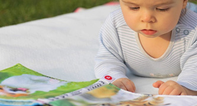
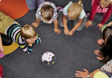
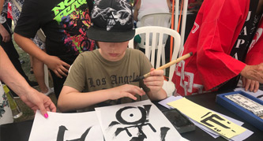
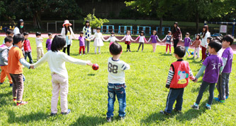

-
Mandarin Go provides a structured curriculum paired with unique teaching methods to nurture children in an immersive environment.
-
Beginner

In company with their parents, children can nurture their interests in the language through our immersive learning environment, learning and growing alongside other children and parents.
Recommended for children ages 1+
-
Elementary

Children will develop their familiarity with Mandarin through songs, nursery rhymes and storytelling. The teacher nurtures their capabilities in the language through greetings and awareness of their environment.
Recommended for children ages 3+
-
Intermediate

Children are encouraged to respond using Mandarin, comprehend basic conversational vocabulary and differentiate everyday words, through a lively and dynamic teaching environment.
Recommended for children ages 5+
-
Upper Intermediate

Suitable for children who would like to further nurture their fluency in the language, through using Mandarin to respond, describe topics of interest, as well as reading and writing simple sentences.
Recommended for children ages 8+
-
Advanced
Suitable for the children of native Mandarin speakers, as the level teaches children to use Mandarin with confidence in conversation, developing their understanding of specific and abstract topics, as well as reading short paragraphs and writing letters and diaries.
Recommended for children ages 8+
Featured Themes
A wide range of topics are covered beginning with basic greetings and self-introduction to learning about school life, communities and occupations. Our curriculum and activities are structured and designed based on the children’s daily and social experiences to increase their social, community and self-awareness while learning a new language.
-
Basic knowledge
-

About myself
-
My family
-

School life
-

Community
-

Occupations
-
Animals
-

Our environment
-
Health and foods
-

Festivals and celebrations
Chinese Cultural Activities and Events
-
Mandarin Go Open Day
Date： Saturday, 23 March
Time： 10:30-11:30
Location： Hampstead Community Centre
Address： 78 Hampstead High St, Hampstead, London NW3 1RE -
Traditional Chinese New Year

Date： Saturday, 3 February
Time： 11:00-16:00
Location： Burgh House & Hampstead Museum
Address： New End Square, Hampstead, London NW3 1LT -
The Best Bear Colouring Competition

Date： From now until 29 March, 2019
How to participate：
1. Download artwork here
2. Complete it and post it to us with your details
Where to hand in our artwork：
1. Message us on our FB page
2. Email to us: MandarinGOUK@hotmail.com -
Mandarin and Chinese Cultural Workshop for Children

Date： Friday, 26 April, 24 May, 28 June
Time： 16:00 - 17:00
Location： Burgh House & Hampstead Museum
Address： New End Square, Hampstead, London NW3 1LT
Limited spaces available, booking advised.
-
Traditional Chinese Folk Activities and Toys

Mandarin Go provide different traditional Chinese folk activities and toys for children and parents to experience. Please email us if interested, thank you.
-
Fun Learn Chinese Holiday Camp

Time：9:30-12:30 / 9:30 - 15:30
Note：Mandarin Go provide early drop off and late pick up service with additionalfees, please email us for more information, thank you.